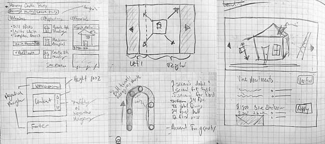

Hi, I'm
Andrew Battenburg.
I'm a software designer, specializing in responsive and mobile web. You'll usually find me developing prototypes, writing requirements, designing UI kits, and front end coding.
In the 2007 I moved to Seattle to learn how to build for the web and join start ups. Four years later I graduated from University of Washington with a focus on Human Computer Interaction and had two companies under the belt.
If I'm not cooking, taking photos, or traveling, I'll be supporting eSports or laying some smack down in Super Smash. I prefer telling silly jokes in person rather than on social media.
Contact
Feel free to email me at abattenb@gmail.com or, if you prefer, you can send me a LinkedIn message.
UI + UX
UI Kit
For any project I always design a kit of UI elements to pull from. Software is a collection of components; headers, text, photos, and buttons. When the pieces are robust, the whole is easier and faster to develop.
Below you'll find some highlights from my most recent kit. High contrast colors, clear UI states, and playful animations allowed for accessibility to be a design priority. A screenshot of the full kit I developed for renticity can be found here.
{kind=link}
Buttons
Most buttons improperly omit focus and active states, which are necessary for keyboard navigation and user feedback. Embracing these states makes buttons not only more accessible, but so much more satisfying. Go ahead and give them a try!
Loading Icon
I wanted to create a more playful loading icon instead of the standard . The bouncing animation and changing colors hold your attention for long enough to load. If, for some reason, the load time is extra long (30+ seconds), there is an easter egg to find.
Loading party invites…
Side Navigation
Just like buttons, many sets of navigation don't include differentiating "active" and "hover" states. If you route by relative URL, use anchor tags, if by JS, use buttons, that way the keyboard can focus the navigation.
Dropdown
With enough elbow grease, you can get all dropdowns, including Google Places' autocomplete and Bootstrap's dropdown, to use the same styling. I like to sneak in subtle color styling to convey the importance of an action.
Alerts
I prefer big buttons, generous hitboxes, and clear, concise feedback. Never lie to the user, you'll only get a support ticket later.
Small
Useful for inline validation, auto saving, or small notices.
Send party invites 2 weeks out for the best turnout.
Party information auto-saved.
Are you sure your birthday is in the future?
Medium
Great for "banana bar" messages or in-page feedback with an action.
Party invite sent successfully!
You just got invited to a party!
The party crashed! Oh no!
Large
Awesome for blank screen UX or upsells.
Messages
A classic, responsive, all CSS take on a Messages design.
Color Table
I always create brand table for easy, cross-application color look up. Each color has enough contrast such that any three shade or tint steps away meets at least WCAG AA accessibility standards.
| Color | Name | Hex | RGB | Classes | Usage |
|---|---|---|---|---|---|
| Light Grey | #FAFAFB | rgba(250, 250, 251, 1) |
.lightgrey_bg
.lightgrey |
Backgrounds | |
| Soft Grey | #C7C9CA | rgba(199, 201, 202, 1) |
.softgrey_bg
.softgrey |
||
| Grey | #949697 | rgba(148, 150, 151, 1) |
.grey_bg
.grey |
||
| Hard Grey | #525556 | rgba(82, 85, 86, 1) |
.hardgrey_bg
.hardgrey |
||
| Dark Grey | #323333 | rgba(50, 51, 51, 1) |
.darkgrey_bg
.darkgrey |
Text | |
| Light Blue | #F4F9EF | rgba(244, 249, 239, 1) |
.lightblue_bg
.lightblue |
||
| Soft Blue | #81C786 | rgba(129, 199, 134, 1) |
.softblue_bg
.softblue |
||
| Blue | #10AD4E | rgba(16, 173, 78, 1) |
.blue_bg
.blue |
Branding
CTA |
|
| Hard Blue | #048044 | rgba(4, 128, 68, 1) |
.hardblue_bg
.hardblue |
Links | |
| Dark Blue | #084C33 | rgba(8, 76, 51, 1) |
.darkblue_bg
.darkblue |
Shadowing | |
| Light Pink | #FFF8F9 | rgba(255, 248, 249, 1) |
.lightpink_bg
.lightpink |
||
| Soft Pink | #FF8D90 | rgba(255, 141, 144, 1) |
.softpink_bg
.softpink |
||
| Pink | #FF675D | rgba(255, 103, 93, 1) |
.pink_bg
.pink |
Favoriting
Deleting |
|
| Hard Pink | #BF4949 | rgba(191, 73, 73, 1) |
.hardpink_bg
.hardpink |
||
| Dark Pink | #7F2525 | rgba(127, 37, 37, 1) |
.darkpink_bg
.darkpink |
UX Process
My favorite approach is to move from sketch into front-end prototype to get actionable feedback as fast as possible. Longer projects may need more written requirements and detailed user flows, but I like getting to the "wow moment" as soon as possible. It helps get the ideas that are in people's heads and get them into something concrete.
Pen and Paper
You still can't replace a paper notebook. It never runs out of batteries, looks great with age, and doesn't bug you with updates. When designing in groups, whiteboards are also great. It's a lot of fun and anyone can contribute without worrying about pixels or polish.
Prototype
Developing a UI kit for your product makes it easy to go from sketch to browser and by using real components, your prototypes are already using production-tested code. Javascript frameworks, IDEs, and synchronized device testing means get you can results on your phone or big screen in seconds.
When making something new, I like to keep a "digital sketchbook" as well, designing in the medium itself. Sometimes it's just a good way to warm up while drinking your morning coffee, or maybe you just need a clean-room to nail down an idea.
{kind=link}
Feedback
The higher the fidelity, the most direct and actionable the feedback. Getting into the browser means I can surface use cases earlier in development, which leads to better requirements and smoother product launches in the long run.
I like for customers to run through prototypes by themselves and meet a few days later. By having the interview away from the screen, lasting impressions and what's most important come into focus. Plus, there's nothing better than in-person compliments.
Work
renticity
In 2013 I joined Renticity as Lead Designer to create a set of tools for landlords and renters. We set out to to build the complete rental package; list properties, screen applications, sign leases, and pay rent, all online and all on the go.
{kind=link}
{kind=link}
{kind=link}
{kind=link}
{kind=link}
{kind=link}
{kind=link}
{kind=link}
Our searchable map included both organic listings and aggregate data from 3rd party sources. Renter applications to listings were all digital, which allowed us to offer near-instant credit and criminal background checks. Once an application was accepted, landlords could either upload their lease or use Renticity's own lease to send to renters to eSign. Renters could pay for their deposits, rent, and utilities online as well. Everything together, online, mobile, and integrated.
buuteeq
Buuteeq was a content platform for hotels to market and book online. I was brought on as part of the front end design team, implementing redlines, design comps, and browser support. Clients often had special requests and I worked closely with them for special features and additional services such as advertising.
In 2012 we were transitioning from a fixed grid system to responsive design while also supporting browsers all the way back to IE6, FF3, and iOS 4. Two years later Buuteeq sold and absorbed by Priceline Group.
shiftalliance
shiftalliance was founded on the idea that "doing the right thing" and "successful business" were intrinsically linked. We built business models that at their core brought value and delight to both the customers and the business. I was responsible for business research and lead a student team the University of Washington as a part of the Capstone Project.
Photography
From mountainsides to workbenches, a selection of photographs, projects, and post-processing. Locations include Dubai, Columbia, Seattle, and more.
Huge shout-out to Alan O'Neil and his help with stringing and programming LEDs. Without him there would be no light and magic.